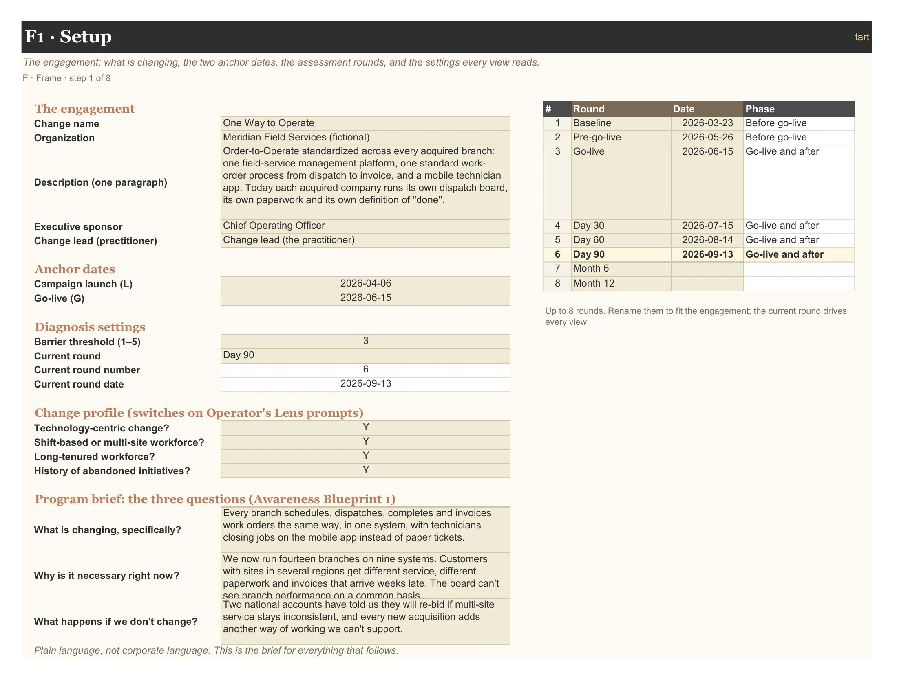
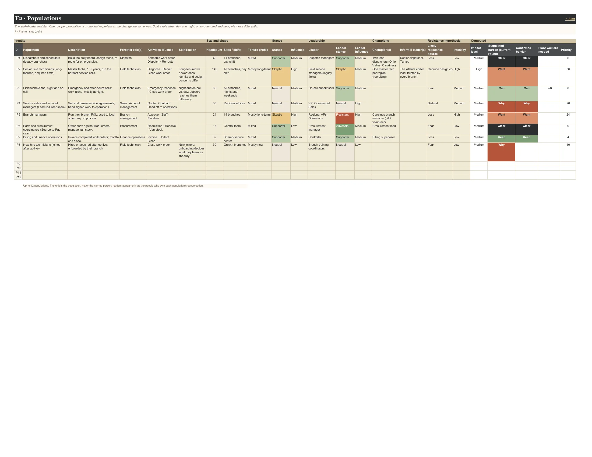
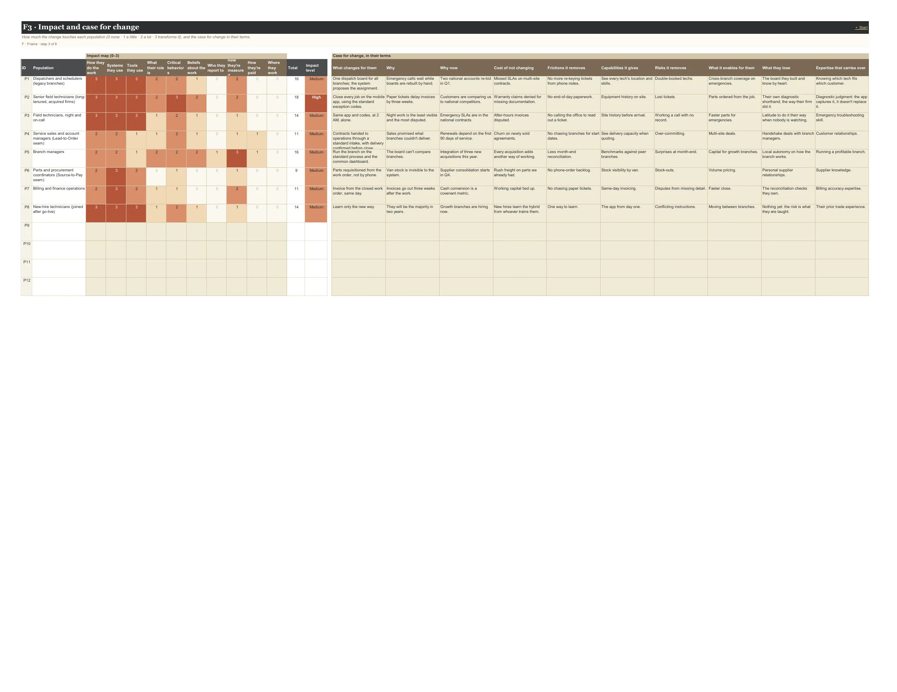

User guide · The tabs
3 tabs: F1 Setup, F2 Populations, F3 Impact.
Frame the change and the populations it touches. A population is a group that experiences the change the same way; split a role when day and night shifts, or long-tenured and new staff, will move differently. The unit is always the population, never the named person.
Context (opens in a new tab): The Prescription Trap · Awareness: Build a Change Campaign · Desire: Resistance Is a Design Problem
On this page: F1 Setup · F2 Populations · F3 Impact
The engagement: what is changing, the two anchor dates, the assessment rounds, and the settings every view reads.
Fill this in first. The two anchor dates matter most: campaign launch (L) and go-live (G) place every timed practice on T1 Timeline, and go-live decides which rounds count as "after go-live" for the regression readings.
Name up to eight assessment rounds with their dates, then pick the current round. Every view, card and chart shows that round; switching it is how you look back in time.
The barrier threshold (default 3) is the score at or below which a link counts as a barrier. The change profile switches on the Operator's Lens checks that apply (shift coverage, identity, "what's different this time", digital adoption).
The three-question program brief (what is changing, why now, what happens if we don't) is the brief for all communication that follows. Write it in plain language.

Reads from: F2 Populations
| Field | Type | What it means | Values |
|---|---|---|---|
| The engagement | |||
| Change name | input | ||
| Organization | input | ||
| Description (one paragraph) | input | ||
| Executive sponsor | input | ||
| Change lead (practitioner) | input | ||
| Anchor dates | |||
| Campaign launch (L) | input | The Awareness campaign's week 1. Timeline rows marked L are placed relative to this date. | date |
| Go-live (G) | input | The day the new way becomes the way. Most timed practices key off this date. | date |
| Diagnosis settings | |||
| Barrier threshold (1–5) | input | A link scoring at or below this is a barrier. Default 3: Knowledge Blueprint 1 defines 'adequate' as 'not actively resistant and understands why', which is a 4 on the anchored scales. | whole number 1–4 |
| Current round | input | Every view (Readiness Map, cards, charts) reads this round. | dropdown: the round names from F1 Setup |
| Current round number | computed | ||
| Current round date | computed | ||
| Change profile (switches on Operator's Lens prompts) | |||
| Technology-centric change? | input | Y brings in the Digital Adoption Platform (KN-6) prompt. | YN |
| Shift-based or multi-site workforce? | input | Y adds shift-coverage checks: support for every shift and site (OL-11), point-of-work formats (OL-8). | YN |
| Long-tenured workforce? | input | Y adds identity prompts: identity continuity (OL-4), involve skeptics in design (OL-5). | YN |
| History of abandoned initiatives? | input | Y adds the 'what's different this time' evidence prompt (OL-1). | YN |
| Program brief: the three questions (Awareness Blueprint 1) | |||
| What is changing, specifically? | input | ||
| Why is it necessary right now? | input | ||
| What happens if we don't change? | input | ||
| Assessment rounds | |||
| Round name | input | ||
| Round date | input | date | |
| Phase | computed | Before go-live, or Go-live and after: decides when regression readings apply. | |
The stakeholder register. One row per population: a group that experiences the change the same way. Split a role when day and night, or long-tenured and new, will move differently.
One row per population, up to twelve. Name it, size it, and record where it stands: its stance on the change and its influence, its leader and the leader's own stance (sometimes the leader is the resistance), champions and informal leaders, and a first hypothesis about where resistance comes from.
The grey columns on the right are computed. Suggested barrier comes from this round's Sweep, Confirmed barrier from Confirm, Floor walkers needed appears when the barrier is Can or go-live is near, and Priority ranks populations by impact × influence × distance from Clear.

Reads from: F1 Setup F3 Impact I1 Sweep I2 Confirm
| Column | Type | What it means | Values |
|---|---|---|---|
| Identity | |||
| ID | fixed | ||
| Population | input | ||
| Description | input | ||
| Forester role(s) | input | ||
| Activities touched | input | ||
| Split reason | input | Why this is a separate population: e.g. day vs. night shift, long-tenured vs. new hires. | |
| Size and shape | |||
| Headcount | input | People in this population. | whole number 0–1000000 |
| Sites / shifts | input | ||
| Tenure profile | input | Mostly long-tenuredMixedMostly new | |
| Stance | |||
| Stance | input | AdvocateSupporterNeutralSkepticResistant | |
| Influence | input | HighMediumLow | |
| Leadership | |||
| Leader | input | ||
| Leader stance | input | Can differ from the population's. Sometimes the leader is the resistance. Resistant or Skeptic leaders with High influence go to the Sponsor Brief. | AdvocateSupporterNeutralSkepticResistant |
| Leader influence | input | HighMediumLow | |
| Champions | |||
| Champion(s) | input | ||
| Informal leader(s) | input | Well-networked and trusted beats high-performing. A skeptic-turned-champion is worth the most (Desire Blueprint 4). | |
| Resistance hypothesis | |||
| Likely resistance source | input | Desire Blueprint 3, the resistance map: Fear · Loss · Distrust · Genuine design concern. Genuine design concern is expertise, not ignorance: involve them in the design. | FearLossDistrustGenuine design concern |
| Intensity | input | HighMediumLow | |
| Computed | |||
| Impact level | computed | ||
| Suggested barrier (current round) | computed | From I1 Sweep, for the current round (F1 Setup). | |
| Confirmed barrier | computed | From I2 Confirm: the first link whose verdict is 'Confirmed barrier'. Clear when every link is Cleared or Not the barrier. | |
| Floor walkers needed | computed | Shown when the barrier is Can (Ability) or go-live is within 6 weeks of the current round: about one floor walker per 15–20 users for high-complexity changes (Ability Blueprint 2). | |
| Priority | computed | Impact (1–3) × influence (1–3) × distance from Clear (Why = 5 … Keep = 1, Clear = 0; 3 while unassessed). Higher = act sooner. | |
How much the change touches each population (0 none · 1 a little · 2 a lot · 3 transforms it), and the case for change in their terms.
Score how much the change touches each population on ten aspects, 0 to 3. The total sets the population's impact level, which feeds priority. The grid colours itself as a heat map.
To the right, write the case for change in their terms: what changes for them, why, why now, the cost of not changing, the gains (the WIIFM matrix) and, honestly, what they lose, plus the expertise that carries over.

Reads from: F2 Populations
| Column | Type | What it means | Values |
|---|---|---|---|
| ID | fixed | ||
| Population | computed | ||
| Impact map (0–3) | |||
| How they do the work | input | Forester can pre-fill this from the current/future-state delta. | whole number 0–3 |
| Systems they use | input | Forester can pre-fill this from the current/future-state delta. | whole number 0–3 |
| Tools they use | input | Forester can pre-fill this from the current/future-state delta. | whole number 0–3 |
| What their role is | input | 0 none · 1 a little · 2 a lot · 3 transforms it | whole number 0–3 |
| Critical behaviors | input | 0 none · 1 a little · 2 a lot · 3 transforms it | whole number 0–3 |
| Beliefs about the work | input | 0 none · 1 a little · 2 a lot · 3 transforms it | whole number 0–3 |
| Who they report to | input | 0 none · 1 a little · 2 a lot · 3 transforms it | whole number 0–3 |
| How they're measured | input | 0 none · 1 a little · 2 a lot · 3 transforms it | whole number 0–3 |
| How they're paid | input | 0 none · 1 a little · 2 a lot · 3 transforms it | whole number 0–3 |
| Where they work | input | 0 none · 1 a little · 2 a lot · 3 transforms it | whole number 0–3 |
| Total | computed | ||
| Impact level | computed | Total of the ten aspects (0–30): 18+ High, 9–17 Medium, 1–8 Low. | |
| Case for change, in their terms | |||
| What changes for them | input | Awareness Blueprint 1, per audience. | |
| Why | input | ||
| Why now | input | ||
| Cost of not changing | input | ||
| Frictions it removes | input | Desire Blueprint 1, the WIIFM matrix: gains first. | |
| Capabilities it gives | input | ||
| Risks it removes | input | ||
| What it enables for them | input | ||
| What they lose | input | The other side, honestly: routines, hard-won expertise, autonomy, mastered tools. Programs that present only gains are not credible. | |
| Expertise that carries over | input | Operator's Lens, identity continuity: which skills and knowledge carry into the new state, and where their expertise is an advantage. | |
F3 Impact scores each 0 (none) to 3 (transforms it). The first three can one day be pre-filled from a current- and future-state process model.
| Aspect | Derivable from a process model |
|---|---|
| How they do the work | Yes |
| Systems they use | Yes |
| Tools they use | Yes |
| What their role is | Partly |
| Critical behaviors | Partly |
| Beliefs about the work | No |
| Who they report to | No |
| How they're measured | No |
| How they're paid | No |
| Where they work | No |